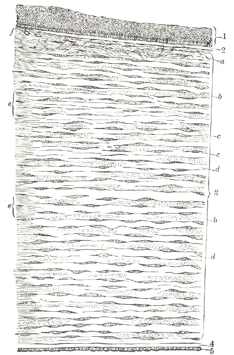
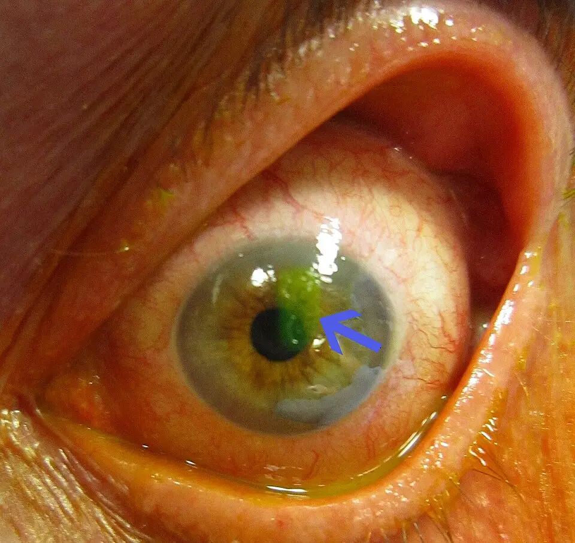

DX.5 — Corps étranger cornéen ou abrasion cornéenne 🚩 E2
Un œil qui se ferme de force après une projection ou un frottement cache souvent une lésion de la cornée, et non une dystonieS1S12. La douleur cornéenne déclenche un clignement réflexe par l'arc trijumeau-facial, ce qui explique le faux « blépharospasme »S23S24. Le médecin mesure d'abord l'acuité visuelle, écarte la perforation et la brûlure chimique, puis colore la cornée à la fluorescéineS2S7S9. Il ne remet jamais de collyre anesthésiant au patient, car l'usage répété détruit l'épithéliumS27S6.
1. Définition
Le College of Optometrists britannique définit l'abrasion cornéenne comme une perte traumatique de l'épithélium, la couche de surface de la cornée, dans sa recommandation publiée le 9 décembre 2025S12. Le corps étranger cornéen est une particule qui adhère à la cornée ou s'y enchâsse, le plus souvent sans la traverser, selon la recommandation du même collègeS13. Les deux lésions forment une seule entité clinique, car l'ablation d'un corps étranger laisse une perte épithéliale dont on mesure la tailleS7.
2. Épidémiologie (Suisse, puis Europe)
Les assureurs-accidents suisses enregistrent chaque année 40 800 accidents dont le diagnostic principal est une lésion oculaireS5. Environ 26 700 surviennent au travail et 14 000 pendant les loisirs ; les corps étrangers de l'œil externe en sont la cause la plus fréquenteS5. Dans la construction métallique et le montage, les lésions oculaires représentent 31 % des accidents professionnels reconnusS5. Les groupes touchés en Europe, l'évolution habituelle et le coût social expliquent le rang 🚩 E2 malgré une gravité moyenne faible.
Qui est touché : Suisse, puis Europe
La Suva publie des chiffres d'assurance, tandis que l'étude d'Helsinki fournit des incidences en populationS5S17.
| Donnée | Valeur | Population, année | Source |
|---|---|---|---|
| Accidents avec lésion oculaire comme diagnostic principal | 40 800 par an, dont 26 700 au travail et 14 000 en loisirs | Assurés LAA en Suisse, article du 13.01.2026 | [S5] |
| Lésions oculaires dans la métallurgie | Environ 100 puis 50 pour 1000 équivalents plein temps et par an, en vingt ans | Branches du métal, Suisse | [S5] |
| Incidence des traumatismes oculaires de 17 à 60 ans | 88/100 000/an ; 80 % d'hommes ; 34 % au travail ; corps étrangers superficiels 33 % des causes | Sud de la Finlande, 2011–2012, 831 patients | [S17] |
| Incidence chez l'enfant de 16 ans ou moins | 5,2 à 8,3/10 000/an ; corps étrangers superficiels 11 % des causes | Sud de la Finlande, 202 enfants | [S18] |
| Incidence dès 61 ans | 38/100 000/an ; corps étrangers superficiels 18 % des causes | Sud de la Finlande, 118 patients | [S19] |
| Lésions par outils de travail | 3 % des traumatismes oculaires ; 2,4/100 000/an ; 84 % d'hommes | Sud de la Finlande, 37 patients | [S20] |
Chez les plus de 60 ans, les chutes dominent, mais les corps étrangers superficiels causent encore 18 % des lésions oculairesS19. Le patient type de l'étude d'Helsinki est un homme de 31 à 45 ans, blessé au travail par un corps étranger, qui garde une acuité de 20/20S17. Les lésions mineures représentent 54 % des traumatismes de l'adulte actif, ce qui confirme leur poids dans la pratique ambulatoireS17.
Évolution habituelle et séquelles
Les abrasions cornéennes guérissent en général vite et complètement, sauf si la lésion est profonde, contaminée ou infectéeS12. Une érosion récidivante peut survenir après la cicatrisation ; le patient revient donc si les symptômes persistentS6S10. Chez les blessés par outil de travail, 9 plaies du globe sur 37 cas et 30 % de séquelles permanentes montrent que le mécanisme compte davantage que la plainteS20.
Coût social et assurance
Les lésions oculaires en diagnostic principal coûtent près de 20 millions de francs par an aux assureurs suisses, soit environ 500 francs par casS5. En Finlande du Sud, les traumatismes oculaires ont coûté 1 870 300 euros par million d'habitants sur trois mois, surtout par perte de productivitéS21b.
3. Physiopathologie
La cornée ne se comprend qu'après une base à connaître : une surface transparente, avasculaire et très innervée, recouverte d'un épithélium mince qui se renouvelleS22. Le traumatisme suit une chaîne en quatre temps : l'agent arrache ou pénètre l'épithélium, les nocicepteurs se déchargent, les réflexes protecteurs ferment l'œil, puis l'épithélium recouvre la perteS22S23. Chaque maillon se relie à l'examen qui le montre et au geste qui le corrige.
Base à connaître — cornée, innervation et arc réflexe du clignement
La cornée compte cinq couches : épithélium, couche de Bowman, stroma, membrane de Descemet et endothéliumS22. L'épithélium mesure environ 50 µm et compte 5 à 7 assises de cellules non kératinisées, posées sur une couche de Bowman de 12 µmS22. Le stroma forme 80 à 85 % de l'épaisseur, qui atteint 551 à 565 µm au centreS22. La couche de Bowman ne se régénère pas ; sa lésion laisse donc une cicatrice, alors qu'une perte purement épithéliale guérit sans traceS22.
La sensibilité cornéenne vient de la branche nasociliaire du nerf ophtalmique, première division du trijumeau, ce qui fait de la cornée l'un des tissus les plus sensibles du corpsS22. Les nocicepteurs mécaniques produisent la douleur piquante, tandis que les nocicepteurs polymodaux, sensibles aux médiateurs de l'inflammation, entretiennent la brûlureS23.
Le réflexe cornéen a son afférence dans le nerf V et son efférence dans le nerf VII, qui commande le muscle orbiculaire des paupièresS24. Les neurones trigéminaux de second ordre projettent aussi vers le noyau moteur facial et vers le noyau salivaire supérieur, ce qui déclenche clignement et larmoiementS23. Cette boucle explique pourquoi une simple abrasion ferme l'œil en spasme et imite un blépharospasmeS23S24.
Coupe verticale de la cornée humaine : la gravure histologique de Gray montre la cornée près du limbe, de l'épithélium à l'endothéliumS22.

La gravure brute montre les couches sans repère : le lecteur y situe lui-même l'épithélium et le stroma.
La copie annotée porte les quatre repères que la lecture guidée commente ci-dessous.
- Le repère un montre l'épithélium, bande cellulaire supérieure ; une abrasion simple ne touche que cette bande, qui se recouvre sans cicatriceS22.
- Le repère deux montre la fine bande claire de Bowman, sous l'épithélium, dont l'atteinte laisse une cicatrice définitiveS22.
- Le repère trois montre le stroma lamellaire, qui occupe presque toute l'épaisseur ; une lésion profonde y impose l'ophtalmologue en urgenceS22S6.
- Le repère quatre montre la membrane de Descemet et l'endothélium, qui ferment la face postérieure ; leur franchissement signe une plaie perforanteS22S8.
Ce que l'image décide : la profondeur atteinte décide de la conduite : l'épithélium relève du généraliste, le stroma et au-delà relèvent de l'ophtalmologue en urgence.

Chaîne en quatre temps
| Temps | Ce qui se passe | Traduction clinique |
|---|---|---|
| Amorce | Un doigt, une branche, une brosse à mascara, une lentille ou une particule frotte l'épithélium [S12] ; une particule rapide peut pénétrer le globe [S7] | Douleur immédiate et sensation de grain de sable |
| Développement | Les nocicepteurs exposés déchargent ; l'inflammation locale libère des médiateurs qui les sensibilisent [S23] | Douleur qui persiste et s'aggrave au clignement |
| Installation | Le réflexe trigémino-facial ferme l'œil et fait pleurer [S23][S24] ; le spasme ciliaire ajoute une douleur que la cycloplégie soulage [S6] | Blépharospasme réflexe, larmoiement, photophobie |
| Maintien ou guérison | Une particule retenue sous la paupière entretient des traînées verticales sur la cornée [S26] ; un fer laisse un anneau de rouille [S7] ; un végétal expose au champignon [S6] | Symptômes qui ne cèdent pas, ou infection secondaire |
Corrélation : perturbation, exploration, thérapeutique
| Perturbation | Exploration qui la montre | Thérapeutique (mécanisme) |
|---|---|---|
| Perte épithéliale | Fluorescéine en lumière bleue, qui colore la zone dénudée [S2][S28] | Lubrification et protection, qui laissent l'épithélium recouvrir la perte [S6][S32] |
| Corps étranger sous la paupière supérieure | Éversion simple ou double de la paupière [S7] | Ablation au coton-tige humide, qui supprime le frottement [S7] |
| Corps étranger enchâssé, anneau de rouille | Lampe à fente, profondeur évaluée par le spécialiste [S7] | Ablation à l'aiguille tangentielle ou à la fraise par un praticien formé [S7] |
| Brèche du globe | Test de Seidel, imagerie à la recherche d'un corps étranger intraoculaire [S7][S8] | Coque rigide sans pression, transfert immédiat [S8] |
| Contamination bactérienne | Infiltrat, absence d'amélioration à 48 heures [S1] | Antibiotique topique ciblé, avis ophtalmologique [S1][S6] |
| Spasme ciliaire | Photophobie intense, douleur profonde [S6] | Cycloplégique, qui relâche le muscle ciliaire [S6][S33] |
4. Démarche diagnostique
Le médecin écarte d'abord trois lésions qui menacent l'œil en quelques heures : la plaie perforante avec corps étranger intraoculaire, la brûlure chimique et la kératite infectieuse (DX.6, rang 🚩 E1)S1S8S9. Il cherche ensuite les causes fréquentes qui miment l'abrasion : corps étranger sous-tarsien, photokératite et érosion récidivanteS10S11S26. Le tableau des discriminants donne pour chacun l'élément qui tranche, le piège et la conduite.
Diagnostics discriminants : les graves d'abord
| Diagnostic | Élément qui tranche | Piège | Conduite si positif |
|---|---|---|---|
| 🚩 Plaie perforante, corps étranger intraoculaire | Projection rapide, métal frappé contre métal, sans lunettes ; Seidel positif [S7][S8] | Une petite porte d'entrée peut sembler banale | Coque rigide, aucune pression, jeûne, transfert immédiat [S8] |
| 🚩 Brûlure chimique | Anamnèse de projection d'acide, de base, de solvant ou de détergent [S1] | Retarder le rinçage pour examiner | Rinçage immédiat et abondant, contrôle du pH, puis ophtalmologue [S1][S9] |
| 🚩 Kératite infectieuse (DX.6) | Infiltrat blanchâtre, rougeur périkératique, lentilles de contact [S1] | Traiter une abrasion de porteur de lentilles comme banale | Ophtalmologue en urgence, lentilles gardées pour culture [S1] |
| Corps étranger sous-tarsien | Traînées verticales colorées, particule visible à l'éversion [S26] | Oublier de retourner la paupière | Ablation, puis traitement de l'abrasion [S7][S26] |
| Photokératite | Exposition aux ultraviolets à l'anamnèse, sans traumatisme [S11] | Chercher en vain un corps étranger | Traitement symptomatique, résolution en 24 à 48 heures [S11] |
| Érosion récidivante | Antécédent d'abrasion, symptômes qui reviennent après la guérison [S6][S10] | Conclure à un nouveau traumatisme | Lubrification, pommade le soir, avis si échec [S10] |
5. Anamnèse ciblée et drapeaux rouges
Le mécanisme oriente toute la suite, car une particule à haute vitesse peut traverser le globe, un fer rouille et un végétal transporte des champignonsS7. Le médecin demande donc l'outil, la matière, la vitesse, le port de lunettes et l'heure exacte, car le métal frappé contre le métal fait craindre un corps étranger intraoculaireS8. Il demande aussi le port de lentilles, le diabète et un antécédent de chirurgie oculaire, qui aggravent le risque ou masquent la douleurS1S12.
Chaque symptôme se caractérise : douleur, sensation de corps étranger, photophobie, larmoiement, baisse visuelle et fermeture forcée des paupières. Les drapeaux rouges imposent chacun une action immédiate.
Douleur
| Caractère | Forme typique | Forme atypique et sa signification |
|---|---|---|
| Siège | Superficielle, dans l'œil atteint [S12] | Douleur profonde avec céphalée : glaucome aigu ou uvéite à chercher [S1][S2] |
| Début | Brutal, au moment du traumatisme [S12] | Douleur qui revient sans nouveau traumatisme après une abrasion guérie : érosion récidivante [S6][S10] |
| Intensité | De faible à sévère selon la taille de la perte [S12] | Douleur absente chez le diabétique malgré une lésion [S1] |
| Facteurs aggravants | Clignement et mouvements oculaires [S26] | Douleur qui ne s'améliore pas après 48 heures de traitement : infection ou corps étranger retenu [S1] |
| Facteurs calmants | Fermeture de l'œil ; collyre anesthésiant en consultation seulement [S6][S27] | Soulagement total par l'anesthésique, puis rechute : le collyre masque la lésion, il ne la traite pas [S16] |
La douleur est typique quand elle naît avec le traumatisme et augmente au clignement, car le frottement palpébral stimule les nocicepteurs dénudésS23S26.
Sensation de corps étranger
Le patient décrit un grain de sable qui gratte à chaque clignement ; cette sensation est typique du corps étranger sous-tarsien, qui frotte contre la cornéeS26. Elle persiste souvent après l'ablation, car la perte épithéliale continue de stimuler les mêmes terminaisonsS7S23. Une sensation chronique, sans traumatisme, oriente plutôt vers une sécheresse oculaire ou une blépharite (DX.1 et DX.2), qui la provoquent aussiS1.
Photophobie
La photophobie accompagne fréquemment l'abrasion ; le spasme ciliaire y contribue, ce que montre le soulagement apporté par la cycloplégieS6S12. Elle figure toutefois parmi les drapeaux rouges des HUG, car elle signale aussi kératite, uvéite et glaucome aiguS1. Une photophobie intense avec baisse visuelle n'est donc pas typique d'une abrasion simple et justifie l'avis spécialiséS1S2.
Baisse visuelle
Une vision floue reste compatible avec une abrasion, surtout centrale, car la perte épithéliale déforme la surface optiqueS12S22. Une baisse nette de l'acuité figure cependant en tête des drapeaux rouges, car elle accompagne kératite infectieuse, uvéite, glaucome aigu et plaie du globeS1S2.
Fermeture forcée des paupières
La fermeture forcée et le blépharospasme font partie des symptômes de l'abrasion, car la douleur cornéenne déclenche le réflexe de clignementS12S24. Un spasme qui cède après l'anesthésique de consultation plaide pour une origine cornéenne, car l'anesthésique supprime le message douloureux de surfaceS23S27. Un spasme bilatéral, indolore et ancien n'est pas typique : il oriente vers le blépharospasme essentiel.
Drapeaux rouges et action immédiate
| Drapeau rouge | Signification | Action immédiate |
|---|---|---|
| Projection de liquide chimique | Brûlure, pronostic lié au délai de rinçage [S9] | Rincer à l'eau du robinet, au Ringer ou au sérum pendant 30 minutes au moins [S1] |
| Particule rapide, marteau sur métal, meulage | Pénétration du globe possible [S7][S8] | Coque rigide, aucune pression, ophtalmologue immédiatement [S8] |
| Baisse de l'acuité visuelle | Lésion centrale profonde, kératite ou plaie [S1] | Avis ophtalmologique en urgence [S1] |
| Port de lentilles de contact | Risque de kératite infectieuse à évolution rapide [S1] | Urgence ophtalmologique ; lentilles conservées dans leur étui pour culture [S1] |
| Matière végétale | Risque fongique [S6] | Avis spécialisé et surveillance de l'infection [S6][S7] |
| Œil unique, chirurgie oculaire, immunosuppression | Marge fonctionnelle réduite [S1] | Avis ophtalmologique en urgence [S1] |
| Patient qui ne peut pas s'exprimer (petit enfant, confusion) | Anamnèse et examen peu fiables [S1] | Avis ophtalmologique en urgence [S1] |
| Absence d'amélioration à 48 heures | Infection ou corps étranger retenu [S1] | Réexamen spécialisé en urgence [S1] |
6. Examen physique ciblé, région par région
L'examen suit l'ordre où il se pratique au cabinet, de la fonction vers la surface, puis vers la chambre antérieureS1S2. Il commence par l'acuité visuelle, puis passe à l'inspection sans pression et à l'éversion des paupières. Il examine ensuite la conjonctive et la rougeur, la cornée à la fluorescéine, puis les pupilles et la chambre antérieure. Il termine par le test de Seidel si une brèche est suspectéeS7.
Région 1 — Acuité visuelle
Signe recherché : le médecin cherche une baisse d'acuité, car elle sépare l'abrasion périphérique bénigne des lésions qui menacent la visionS1S2.
Geste : il mesure chaque œil séparément avec une échelle de Snellen, avant toute manipulation, puis de nouveau après l'ablation d'un corps étrangerS2S7.
Aspect normal et pathologique : une acuité conservée rassure, alors qu'une baisse franche impose l'avis spécialisé en urgenceS1. Un collyre anesthésiant facilite la mesure quand le spasme empêche d'ouvrir l'œilS27.
Région 2 — Inspection des paupières et du globe, sans pression
Signe recherché : le médecin cherche une plaie, un corps étranger visible ou une déformation qui ferait suspecter une brèche du globeS8.
Geste : il observe les deux yeux à la lumière, compare, et n'écarte jamais de force des paupières serrées si une plaie transfixiante est possibleS1S8.
Piège : une pression sur le globe ouvert peut expulser son contenu ; le doute impose donc une coque rigide et le transfertS8.
Région 3 — Éversion des paupières
Signe recherché : le médecin cherche une particule logée sous la paupière supérieure, cause fréquente d'abrasionS12S26.
Geste : il retourne la paupière supérieure, puis pratique une double éversion si nécessaire, et inspecte aussi les culs-de-sac et la conjonctiveS7.
Aspect : la particule apparaît collée à la conjonctive tarsale ; un corps étranger libre se rince au sérum et un corps conjonctival s'enlève au coton-tige stérileS7.
Piège : l'éversion se diffère devant une plaie perforante suspectée, car la recommandation interdit toute pression sur le globeS8.
Région 4 — Conjonctive et type de rougeur
Signe recherché : le médecin distingue une hyperhémie diffuse, banale, d'une hyperhémie périkératique concentrée à 1 à 3 mm du limbeS2.
Interprétation : la rougeur périkératique oriente vers une atteinte plus grave, comme la kératite infectieuse, l'iritis ou le glaucome aiguS2. Une rougeur hémorragique localisée évoque plutôt une hémorragie sous-conjonctivale, qui justifie un avis urgent dans un contexte traumatiqueS1S2.
Région 5 — Cornée à la fluorescéine en lumière bleue
Signe recherché : le médecin cherche une zone dénudée, qui fixe le colorant, et un corps étranger enchâsséS2S28.
Geste : il instille une goutte de fluorescéine dans le cul-de-sac conjonctival inférieur, puis examine la cornée en lumière bleue, à la fin de l'examenS2S28.
Aspect : l'abrasion apparaît comme une plage verte nette ; des traînées verticales multiples signent un corps étranger sous-tarsienS26. Le médecin mesure la taille et précise la position, la profondeur, l'aspect des bords et un éventuel œdème sous-épithélialS6.
Piège : les lentilles souples absorbent le colorant ; le patient les retire avant l'instillation et attend au moins une heure avant de les remettreS28.
Abrasion cornéenne colorée à la fluorescéine. Le cliché montre un œil photographié en lumière blanche après instillation de fluorescéine, la paupière supérieure relevée.

Le cliché brut permet de chercher seul le signe avant la lecture guidée.
La copie annotée (abrasion cornéenne colorée à la fluorescéine) porte les repères décrits ci-dessous.
- Le repère un : la plage verte paracentrale marque la zone sans épithélium, qui retient le colorant au bord de la pupilleS2S28.
- Le repère deux : la conjonctive bulbaire montre une injection diffuse, réaction banale à l'irritation de surfaceS2.
- Le repère trois : la pupille reste ronde et centrée, ce qui ne suggère pas de brèche du globeS7S8.
- Le repère quatre : le ménisque lacrymal inférieur jaunit, car le colorant se dilue dans les larmes réflexesS23S28.
- La lumière blanche montre mal la plage colorée, que la lumière bleue révèle nettementS2.
- Une lésion proche de l'axe visuel menace l acuité et impose une surveillance plus serrée.
Ce que l'image décide. Une plage verte unique, superficielle, avec pupille ronde et acuité conservée autorise la prise en charge ambulatoire et le contrôle de cicatrisation.

Région 6 — Pupilles et chambre antérieure
Signe recherché : le médecin recherche une anomalie des réflexes pupillaires, des cellules dans la chambre antérieure, un hypopyon ou un hyphémaS2S7.
Interprétation : l'hypopyon, couche de globules blancs, et l'hyphéma, couche de globules rouges, imposent une consultation ophtalmologique urgenteS2. Une anisocorie nouvelle compte aussi parmi les drapeaux rouges des HUGS1.
Région 7 — Test de Seidel
Signe recherché : le test de Seidel recherche une fuite d'humeur aqueuse par une brèche cornéenneS7S28.
Geste : le médecin fait couler la fluorescéine sur la zone suspecte et l'observe en lumière bleue, sans aucune pression sur le globeS7S8.
Aspect : une fuite visible à partir de la plaie définit un Seidel positif ; ce résultat impose la coque rigide et le transfert immédiatS8S28.
7. Approche syndromique
Trois syndromes se succèdent ou se superposent ; chacun se décompose en signes fonctionnels et physiques, avec le geste qui les rechercheS7S8S12. Le tableau syndromique les rassemble ; les définitions des signes précisent chaque terme et son mécanisme.
Syndromes 7.1 à 7.3
| Syndrome | Signes fonctionnels | Signes physiques |
|---|---|---|
| 7.1 Syndrome cornéen superficiel | Douleur, photophobie, larmoiement, vision floue, fermeture forcée [S12] | Plage colorée par la fluorescéine, rougeur conjonctivale [S2][S12] |
| 7.2 Syndrome du corps étranger retenu | Grain de sable à chaque clignement [S26] | Particule sous-tarsienne, traînées verticales, anneau de rouille autour d'un fer [S7][S26] |
| 7.3 Syndrome de brèche du globe | Baisse visuelle, contexte de projection rapide [S8] | Seidel positif, cellules en chambre antérieure, anomalie pupillaire [S7] |
Définitions des signes et mécanismes
| Signe | Définition | Geste de recherche | Mécanisme |
|---|---|---|---|
| Prise de fluorescéine | Coloration verte d'une zone sans épithélium | Goutte au cul-de-sac, lumière bleue [S28] | Le colorant se fixe là où la barrière épithéliale manque [S2] |
| Traînées verticales | Stries colorées parallèles sur la cornée | Fluorescéine, puis éversion palpébrale [S26] | La particule fixée sous la paupière raie la cornée à chaque clignement [S26] |
| Anneau de rouille | Halo brun autour d'un fer ancré | Lampe à fente [S7] | Le fer s'oxyde au contact des larmes et imprègne le tissu [S7] |
| Hyperhémie périkératique | Rougeur à 1–3 mm du limbe | Inspection comparative [S2] | Atteinte cornéenne ou intraoculaire profonde [S2] |
| Seidel positif | Fuite visible du colorant à partir de la plaie | Fluorescéine sur la brèche [S7][S28] | L'humeur aqueuse s'échappe par la plaie [S7][S8] |
8. Diagnostic positif et critères
Le diagnostic reste clinique : il repose sur la prise de fluorescéine dans un contexte traumatique, sans score ni seuil validé dans les recommandations citéesS2S6. Il suffit si la perte est superficielle, la particule retirée, l'acuité conservée et le Seidel négatifS6S7. Il ne suffit pas devant une lésion profonde, une contamination, un signe d'infection ou un anneau de rouille, qui imposent l'ophtalmologue en urgenceS6S7. La classification pratique indique l'orientation de chaque forme.
Classification pratique et orientation
| Classe | Critère | Orientation |
|---|---|---|
| Abrasion simple | Perte épithéliale superficielle, sans contamination ni infection [S6] | Prise en charge jusqu'à guérison, sans transfert [S6] |
| Corps étranger superficiel | Particule en surface, retirée sans difficulté [S7] | Prise en charge sans transfert habituel [S7] |
| Abrasion profonde ou contaminée | Atteinte stromale, matière étrangère incrustée, signe d'infection [S6] | Ophtalmologue en urgence [S6] |
| Corps étranger profond ou rouillé | Pénétration profonde ou anneau de rouille [S7] | Ophtalmologue en urgence, sauf praticien formé à l'ablation [S7] |
| Plaie perforante suspectée | Seidel positif, projection rapide, corps étranger intraoculaire possible [S8] | Transfert immédiat après protection rigide [S8] |
En Suisse, les HUG recommandent la consultation ophtalmologique urgente pour tout traumatisme oculaire, ce qui rend l'orientation plus prudente que dans les filières britanniques d'optométrieS1S6.
9. Examens complémentaires
9.a — Référence : l'examen à la lampe à fente après fluorescéine reste la référence, car il mesure la taille, la profondeur et la contamination de la lésionS6S7.
9.b — Première intention : le généraliste mesure l'acuité et pratique le test à la fluorescéine, qui suffit à confirmer une perte épithélialeS2.
9.c — Alternatives : l'enfant, la grossesse, l'allaitement et les lentilles modifient le choix du colorant et des examensS1S28.
9.d — Seconde intention : le spécialiste demande l'imagerie orbitaire, l'échographie ou la tomographie du segment antérieurS6S7. Le pH des culs-de-sac et la culture des lentilles répondent aux questions de brûlure et d'infectionS1S9.
Acuité visuelle : valeurs et interprétation
| Résultat | Signification | Conduite |
|---|---|---|
| Acuité égale à l'œil sain | Lésion périphérique probable [S2] | Poursuivre l'examen au cabinet |
| Baisse nette, unilatérale | Lésion centrale, kératite, uvéite ou plaie [S1][S2] | Ophtalmologue en urgence [S1] |
| Baisse après ablation d'un corps étranger | Lésion plus profonde que prévu [S7] | Avis spécialisé |
La mesure avant et après toute manœuvre documente l'état initial et révèle une aggravation liée au gesteS7.
Test à la fluorescéine : lecture et pièges
La fluorescéine 0,5 % se donne à raison d'une goutte dans le cul-de-sac conjonctival inférieur avant l'examenS28. Elle met en évidence les ulcérations cornéennes traumatiques, microbiennes ou trophiques et recherche le phénomène de SeidelS28.
| Résultat | Signification | Conduite |
|---|---|---|
| Plage verte unique, bords nets | Abrasion traumatique [S2][S12] | Traitement ambulatoire si superficielle [S6] |
| Traînées verticales | Corps étranger sous-tarsien [S26] | Éverser et retirer la particule [S7] |
| Zone colorée avec infiltrat blanc | Kératite infectieuse [S1] | Ophtalmologue en urgence [S1] |
| Fuite du colorant à partir de la plaie | Seidel positif, brèche du globe [S7] | Coque rigide, transfert immédiat [S8] |
| Atteinte bilatérale après exposition aux ultraviolets | Photokératite [S11] | Traitement symptomatique [S11] |
Le collyre coloré se lit à la fin de l'examen, car il masque ensuite l'aspect de la cornée et de la conjonctiveS2.
Alternatives selon le terrain
| Situation | Adaptation | Source |
|---|---|---|
| Enfant | La sécurité de la fluorescéine 0,5 % unidose n'a pas été étudiée avant 18 ans ; l'AIPS ne recommande pas son usage ; le petit enfant relève de l'avis ophtalmologique urgent | [S28][S1] |
| Grossesse | Aucune donnée clinique n'existe pour la fluorescéine, sans risque fœtal chez l'animal | [S28] |
| Allaitement | La fluorescéine passe dans le lait ; l'AIPS discute une pause de 8 à 12 heures | [S28] |
| Lentilles souples | Retrait avant colorant ; remise une heure plus tard au plus tôt ; aucune lentille pendant le traitement | [S28][S6] |
| Spasme qui empêche l'examen | Oxybuprocaïne en consultation seulement, puis examen | [S27][S6] |
Radiographie ou tomodensitométrie orbitaire
La radiographie ou la tomodensitométrie cherche un corps étranger retenu quand le mécanisme fait craindre une pénétrationS6. Elle se demande en seconde intention, sur avis spécialisé, après la protection de l'œilS6S8. Une imagerie normale n'efface pas le soupçon clinique, car l'examen du fond d'œil dilaté reste nécessaire quand une pénétration est possibleS7S8.
pH des culs-de-sac en cas de projection chimique
Le pH se mesure au papier indicateur universel dans le cul-de-sac, après une pause de 5 à 10 minutes dans l'irrigationS9. Le rinçage continue jusqu'à un pH proche de 6,5 à 7,6, puis le pH se recontrôle 30 minutes plus tardS9. Le service des urgences de Fribourg recommande de disposer de ce matériel aux urgences, car les brûlures représentent 7 à 18 % des lésions oculairesS4.
Culture des lentilles et de leur étui
Chez le porteur de lentilles, le patient retire ses lentilles et les conserve dans leur étui, car leur analyse bactériologique guide le traitement d'une kératiteS1. Cette précaution est valable dès la première consultation, avant l'apparition d'un infiltratS1.
10. Arbre décisionnel
- Si un liquide chimique a touché l'œil, alors le médecin rince immédiatement et abondamment, mesure le pH, puis adresse le patient à l'ophtalmologueS1S9.
- Si une particule rapide, un métal frappé ou un Seidel positif évoque une brèche, alors il protège l'œil par une coque rigide et transfère sans délaiS8.
- Si un objet reste planté dans l'œil, alors il ne le retire jamais et laisse le patient à jeunS8.
- Si l'acuité baisse, si le patient porte des lentilles ou si un infiltrat apparaît, alors l'avis ophtalmologique se demande en urgenceS1S3.
- Sinon, le médecin recherche une particule sous les paupières éversées, puis colore la cornée à la fluorescéineS2S7.
- Si une particule libre ou conjonctivale apparaît, alors il la rince ou la retire au coton-tige stérileS7.
- Si un corps étranger cornéen reste enchâssé ou rouillé, alors un praticien formé le retire, sinon l'ophtalmologue l'enlève en urgenceS5S7.
- Si seule une abrasion superficielle persiste, alors il traite la douleur et la surface, sans pansement occlusif, et revoit le patient si les symptômes persistentS1S6.
- Si aucune amélioration n'apparaît à 48 heures, alors le patient revient chez l'ophtalmologue en urgenceS1.
11. Prise en charge selon les recommandations suisses
11.A — But : le traitement vise une cornée qui ne fixe plus la fluorescéine, une douleur contrôlée et l'absence d'infection, sans séquelle visuelleS6S12.
11.B — Moyens : les formes menaçantes suivent la fenêtre Urgence — conduite chronologique ; l'abrasion simple suit l'ordre du traitement ambulatoireS1S6. Les médicaments relèvent de l'AIPS suisse, et les mesures non médicamenteuses évitent des gestes inutiles, comme le pansementS6S15. Les situations particulières et le volet assurance complètent la prise en charge.
11.C — Surveillance : le médecin surveille la douleur, l'acuité et la coloration jusqu'à guérison, et prévoit un contrôle spécialisé si rien ne s'améliore à 48 heuresS1S6.
11.D — Pronostic : l'évolution est bonne pour l'abrasion simple, mais une érosion récidivante peut survenir ; les critères de guérison et de sortie se vérifient un par unS10S12.
Urgence — conduite chronologique
| Délai | Brûlure chimique | Plaie perforante suspectée | Corps étranger enchâssé, lentilles, baisse visuelle |
|---|---|---|---|
| Minute 0 | Rincer sur place avec tout liquide non toxique, par exemple l'eau du robinet [S9] | Ne pas presser, ne pas forcer les paupières, ne rien retirer [S8] | Ne pas gratter la cornée au cabinet sans formation [S5][S7] |
| Minutes 1 à 30 | Irriguer au moins 30 minutes, plusieurs litres de Ringer ou de sérum [S1] ; anesthésique topique pour permettre le rinçage [S9] | Coque rigide sans pansement compressif ; jeûne, sauf un peu d'eau pour les comprimés [S8] | Mesurer l'acuité, retirer les lentilles et les garder dans l'étui [S1][S2] |
| Minutes 30 à 60 | Mesurer le pH après une pause de 5 à 10 minutes ; continuer jusqu'à 6,5–7,6 [S9] | Antalgique systémique et antiémétique, car les vomissements aggravent la plaie [S8] | Appeler l'ophtalmologue de garde et organiser le transport [S1] |
| Dans l'heure | Recontrôler le pH 30 minutes après normalisation, puis adresser l'œil sévère en urgence [S9] | Transfert immédiat au service d'ophtalmologie, statut antitétanique établi [S8][S25] | Consultation ophtalmologique urgente le jour même [S1][S7] |
Le piège qui fait perdre du temps consiste à examiner longuement un œil brûlé avant de le rincer, car le délai d'irrigation détermine le pronosticS9. Le transfert se prévoit dès qu'un mécanisme à haute vitesse est connu, même si l'œil semble calmeS7S8.
Ordre du traitement ambulatoire de l'abrasion simple
- Le médecin élimine la particule libre par irrigation au sérum, puis enlève la particule conjonctivale au coton-tige stérileS7.
- Il mesure la perte épithéliale restante, car sa taille fixe la surveillance de la cicatrisationS7.
- Il prescrit un antalgique oral simple, comme le paracétamol ou l'ibuprofène, et explique au patient la raison du refus de l'anesthésique localS6S16.
- Il lubrifie la surface par une pommade ou un gel, qui protège l'épithélium en voie de recouvrementS6S32.
- Il réserve l'antibiotique topique aux abrasions étendues ou contaminées et aux porteurs de lentilles, en tenant compte d'un niveau de preuve très faibleS6S14.
- Il vérifie la protection antitétanique selon le plan de vaccination suisseS25.
Médicaments : spécialité, dose AIPS et place
Chaque molécule a sa fiche AIPS : oxybuprocaïne, fluorescéine, ofloxacine, tobramycine, vitamine A, cyclopentolate, paracétamol, ibuprofène et vaccin dTpa.
| Molécule ® | Dose AIPS (adulte) | Voie, durée | Contre-indication majeure | Place |
|---|---|---|---|---|
| Oxybuprocaïne 0,4 % SDU Faure | Trois instillations d'une à deux gouttes, espacées de 90 secondes, pour ôter un corps étranger S27 | Collyre, en consultation seulement | Hypersensibilité ; jamais remis au patient | Examen et ablation [S6] |
| Fluorescéine 0,5 % SDU Faure | Une goutte dans le fornix inférieur S28 | Collyre, avant l'examen | Hypersensibilité | Diagnostic |
| Ofloxacine, Floxal® | Collyre : une goutte 4 fois par jour ; pommade : un grain de riz 3 fois par jour S29S30 | Topique ; durée non fixée par l'AIPS | Hypersensibilité aux quinolones | Porteur de lentilles, sur avis spécialisé [S1][S6] |
| Tobramycine, Tobrex® | Collyre : une à deux gouttes toutes les 4 heures ; pommade : environ 1,5 cm 2 à 3 fois par jour S31 | Topique | Hypersensibilité aux aminosides | Abrasion contaminée [S1][S6] |
| Rétinol, Vitamin A «Blache»® | Ruban de 3 à 5 mm 2 à 4 fois par jour S32 | Pommade ophtalmique | Grossesse, allaitement, hypervitaminose A | Appoint de l'érosion cornéenne |
| Cyclopentolate, Cyclogyl™ | Une à deux gouttes à 0,5 % ou 1 %, répétées après 5 à 10 minutes S33 | Collyre, par le médecin seulement | Glaucome à angle étroit | Spasme ciliaire, décision spécialisée |
| Paracétamol, Dafalgan® | Une à deux fois 500 mg jusqu'à 4 fois par jour, au maximum 4000 mg par jour au-delà de 40 kg S34 | Orale, intervalle de 4 à 8 heures | Insuffisance hépatique sévère | Antalgique de première intention [S6] |
| Ibuprofène, Ibuprofen-Mepha Teva Dolo® | 200 à 400 mg toutes les 4 à 6 heures, au maximum 1200 mg par jour dès 12 ans S35 | Orale, 3 jours en automédication | Troisième trimestre, ulcère actif | Antalgique alternatif [S6] |
| Vaccin dTpa, Boostrix® | Une dose unique de 0,5 mL dès 4 ans S36 | Intramusculaire, deltoïde | Hypersensibilité à un vaccin antérieur | Rappel selon le plan suisse [S25] |
Oxybuprocaïne — Oxybuprocaine 0,4 % SDU Faure (n° 51523)
| Indication | Examens du globe oculaire et petite chirurgie, dont l'extraction de corps étrangers métalliques de la cornée et de la conjonctive [S27] |
|---|---|
| Dose AIPS | Tonométrie : une goutte une minute avant l'examen ; ablation d'un corps étranger : trois instillations d'une à deux gouttes à 90 secondes d'intervalle S27 |
| Contre-indications | Hypersensibilité à l'oxybuprocaïne ; prudence en cas de déficit en pseudocholinestérase, de myasthénie sévère, de cardiopathie ou d'épilepsie [S27] |
| Grossesse et allaitement | Aucune étude n'est disponible ; l'AIPS recommande la prudence [S27] |
| Effet indésirable majeur | Une application unique lèse déjà l'épithélium ; l'usage répété peut provoquer une érosion totale, récidivante, et des infiltrats du stroma [S27] |
L'AIPS interdit au patient de l'utiliser de sa propre initiative, et la recommandation écossaise réserve l'anesthésique à l'examenS27S6. La revue Cochrane de 2023 indique une preuve de très faible certitude pour l'effet antalgique après abrasionS16.
Fluorescéine — Fluorescéine 0,5 % SDU Faure (n° 46996)
| Indication | Mise en évidence des ulcérations cornéennes, recherche du phénomène de Seidel, adaptation des lentilles de contact rigides [S28] |
|---|---|
| Dose AIPS | Une goutte dans le fornix inférieur de la conjonctive avant l'examen [S28] |
| Contre-indications | Hypersensibilité à la fluorescéine ; retrait obligatoire des lentilles souples avant l'instillation [S28] |
| Grossesse | Aucune donnée clinique n'existe ; l'animal ne montre pas de risque fœtal [S28] |
| Allaitement | Le colorant passe dans le lait ; l'AIPS discute une interruption de 8 à 12 heures [S28] |
| Enfant | Sécurité non étudiée avant 18 ans ; usage non recommandé par l'AIPS [S28] |
Un intervalle d'au moins 15 minutes doit séparer la fluorescéine d'un autre collyre, comme l'AIPS le demandeS28.
Ofloxacine — Floxal® collyre (n° 51357) et pommade ophtalmique (n° 51358)
| Indication | Infections bactériennes du segment antérieur et des annexes à germes sensibles [S29][S30] |
|---|---|
| Dose AIPS | Collyre : une goutte 4 fois par jour, augmentable selon la situation S29 ; pommade : un grain de riz 3 fois par jour S30 |
| Contre-indications | Hypersensibilité à l'ofloxacine ou aux quinolones apparentées [S29] |
| Grossesse et allaitement | Usage limité aux indications absolues, malgré une dose locale proche de 0,2 % de la dose orale [S29] |
| Précautions | Photosensibilité ; arrêt aux premiers signes de tendinite ; aucune lentille pendant une infection [S29] |
L'AIPS vise l'infection déclarée ; la prophylaxie après abrasion se fait donc hors indication, selon la recommandation écossaise qui réserve la quinolone aux porteurs de lentillesS6S29. Les HUG demandent d'éviter cette classe en premier recours, car elle se réserve aux infections graves et aux porteurs de lentillesS1.
Tobramycine — Tobrex® collyre et pommade ophtalmique (n° 44538)
| Indication | Infections du segment antérieur à germes sensibles, dont kératite, ulcère cornéen et conjonctivite [S31] |
|---|---|
| Dose AIPS | Infection légère à modérée : une à deux gouttes toutes les 4 heures, ou environ 1,5 cm de pommade 2 à 3 fois par jour S31 |
| Contre-indications | Hypersensibilité à la tobramycine ou aux autres aminosides [S31] |
| Grossesse | Usage exceptionnel et seulement en cas d'indication impérative [S31] |
| Allaitement | Le passage après application oculaire est inconnu ; arrêter l'allaitement ou le médicament selon la situation [S31] |
| Enfant | Pas d'adaptation dès 2 mois ; usage non recommandé avant [S31] |
Les HUG placent la tobramycine en première intention parmi les collyres antibiotiques remboursés en premier recoursS1. La revue Cochrane de 2025 ne permet de soutenir aucun schéma antibiotique particulier après abrasion, car la certitude reste très faibleS14.
Rétinol — Vitamin A «Blache», pommade ophtalmique (n° 22398)
| Indication | Régénération épithéliale après brûlure ou lésion chimique ; appoint dans les érosions de la cornée et la sécheresse oculaire [S32] |
|---|---|
| Dose AIPS | Adulte : ruban de 3 à 5 mm dans le cul-de-sac inférieur, 2 à 4 fois par jour S32 |
| Contre-indications | Hypervitaminose A ; hypersensibilité à un composant, notamment la lanoline [S32] |
| Grossesse et allaitement | Contre-indiquée pendant la grossesse et l'allaitement, en raison d'un risque fœtal lié au rétinol [S32] |
| Enfant | Usage déconseillé, faute d'étude clinique [S32] |
Le patient évite de conduire pendant au moins 20 minutes après l'application, car la pommade brouille la vueS32.
Cyclopentolate — Cyclogyl™ collyre (n° 32634)
| Indication | Mydriase et cycloplégie [S33] |
|---|---|
| Dose AIPS | Adulte : une ou deux gouttes à 0,5 % ou 1 %, répétées 5 à 10 minutes plus tard si nécessaire ; jeune enfant : une goutte à 0,5 % seulement S33 |
| Contre-indications | Glaucome à angle étroit ou angle étroit anatomique ; hypersensibilité [S33] |
| Grossesse et allaitement | Indication stricte seulement ; pas d'allaitement pendant 4 heures après un examen [S33] |
| Précautions | Réservé au médecin, jamais remis au patient ; toxicité centrale chez l'enfant et le sujet âgé [S33] |
La recommandation écossaise propose une goutte à 1 % jusqu'à 3 fois par jour pour le spasme ciliaire, hors AIPS suisseS6. En Suisse, l'AIPS réserve ce collyre à l'usage diagnostique par le médecin ; la cycloplégie thérapeutique relève donc de l'ophtalmologueS33.
Paracétamol — Dafalgan® comprimés (n° 46206)
| Indication | Douleurs faibles à moyennes, dont les douleurs après blessure [S34] |
|---|---|
| Dose AIPS | Adulte et enfant de plus de 40 kg : une à deux fois 500 mg jusqu'à 4 fois par jour, au maximum 4000 mg par jour ; 3 g au plus en cas de risque hépatique S34 |
| Contre-indications | Insuffisance hépatique sévère, hépatite aiguë, maladie de Gilbert [S34] |
| Grossesse | Utilisable en cas de nécessité, à la dose efficace la plus faible et le moins longtemps possible [S34] |
| Allaitement | Considéré comme compatible, avec prudence [S34] |
Ibuprofène — Ibuprofen-Mepha Teva Dolo® (n° 51547)
| Indication | Traitement bref des douleurs après blessure, en automédication [S35] |
|---|---|
| Dose AIPS | Dès 12 ans : 200 à 400 mg par prise, toutes les 4 à 6 heures, au maximum 1200 mg par jour pendant 3 jours S35 |
| Contre-indications | Troisième trimestre de grossesse, ulcère actif, insuffisance rénale ou cardiaque grave, asthme aux anti-inflammatoires [S35] |
| Grossesse | Premier et deuxième trimestres : nécessité absolue seulement ; troisième trimestre : contre-indiqué [S35] |
| Allaitement | À éviter, car les anti-inflammatoires passent dans le lait [S35] |
Vaccin diphtérie-tétanos-coqueluche — Boostrix® (n° 00637)
| Indication | Rappel contre diphtérie, tétanos et coqueluche dès le quatrième anniversaire, selon les recommandations officielles [S36] |
|---|---|
| Dose AIPS | Une dose unique de 0,5 mL, en intramusculaire profonde dans le deltoïde S36 |
| Contre-indications | Hypersensibilité à un composant ou à un vaccin antérieur ; encéphalopathie après une dose antérieure ; report si fièvre sévère [S36] |
| Grossesse | Administrable au deuxième ou au troisième trimestre selon les recommandations officielles [S36] |
| Allaitement | Seulement si le bénéfice l'emporte sur le risque, faute d'étude [S36] |
Le plan suisse 2026 recommande un rappel de 26 à 64 ans quand la dernière dose remonte à 10 ans pour une plaie à risqueS25. Pour une plaie superficielle propre, ce délai atteint 20 ans dans la même tranche d'âgeS25. Avant 26 ans et dès 65 ans, ces délais tombent à 5 et à 10 ansS25.
Mesures non médicamenteuses
Le pansement occlusif n'améliore ni la cicatrisation ni la douleur : la revue Cochrane de 2016 réunit 12 essais et 1080 participants, dont un essai suisseS15. À 24 heures, les yeux pansés guérissent même un peu moins souvent, avec un risque relatif de 0,89S15. La recommandation écossaise interdit donc de panser l'œil ou d'y poser une compresseS6.
Une lentille thérapeutique peut couvrir une abrasion étendue, mais son usage prolongé expose à un défaut épithélial persistantS6. Le patient ne porte aucune lentille de contact pendant le traitementS6. Il protège ensuite l'œil par des lunettes adaptées pour prévenir une récidiveS6.
En Allemagne, 60 % des ophtalmologues interrogés posent une lentille thérapeutique et 40 % un pansement, ce qui montre l'écart entre pratique et preuvesS21.
Situations particulières
| Situation | Adaptation | Source |
|---|---|---|
| Grossesse | Éviter la vitamine A ; ibuprofène contre-indiqué au troisième trimestre ; paracétamol à la dose la plus faible | [S32][S35][S34] |
| Allaitement | Paracétamol compatible ; ibuprofène et vitamine A à éviter ; pause après fluorescéine discutée | [S34][S35][S32][S28] |
| Enfant | Oxybuprocaïne non étudiée ; tobramycine possible dès 2 mois ; avis urgent si l'enfant ne peut pas décrire sa plainte | [S27][S31][S1] |
| Sujet âgé | Prudence avec le cyclopentolate, qui peut provoquer des troubles centraux | [S33] |
| Diabétique | Douleur parfois absente ; abrasion plus fréquente | [S1][S12] |
| Insuffisance hépatique | Paracétamol limité à 3 g par jour S34 | [S34] |
| Insuffisance rénale sévère | Ibuprofène contre-indiqué sous 30 mL/min ; espacement du paracétamol | [S35][S34] |
| Œil unique | Avis ophtalmologique en urgence | [S1] |
Volet social et assurance
L'accident oculaire au travail relève de l'assurance-accidents obligatoire, dont la Suva publie la statistique et finance la préventionS5. La Suva rembourse le vaccin dTpa chez l'adulte quand une vaccination antitétanique après accident et un rappel contre la coqueluche sont indiqués ensembleS25. Les autres assureurs-accidents suivent en principe la pratique de la Suva, sans y être tenusS25.
Surveillance : quoi, quand, seuils
| Élément | Moment | Seuil qui change la conduite |
|---|---|---|
| Douleur, photophobie | Chaque jour jusqu'à disparition | Aggravation ou absence d'amélioration à 48 heures : avis urgent [S1] |
| Acuité visuelle | À chaque contrôle | Baisse nouvelle : avis urgent [S1] |
| Fluorescéine | Au contrôle de cicatrisation | Perte qui s'agrandit, infiltrat ou sécrétion purulente : ophtalmologue [S1][S6] |
| Corps étranger organique | Les jours suivants | Signes d'infection : avis spécialisé [S7] |
En Allemagne, 73 % des ophtalmologues qui renoncent à l'antibiotique programment un contrôle, ce qui place la surveillance au cœur de l'abstentionS21.
Pronostic
L'abrasion superficielle guérit habituellement vite et complètement ; le pronostic s'assombrit si la lésion est profonde, contaminée ou infectéeS12. Une lésion de la couche de Bowman laisse une cicatrice définitive, ce qui menace l'acuité si elle est centraleS22. Après guérison, une érosion récidivante peut survenir ; elle se traite d'abord par lubrification et pommade au coucherS10.
Critères de guérison et de sortie
- La cornée ne fixe plus la fluorescéine, ce qui prouve que l'épithélium couvre la perteS2S6.
- La douleur et la photophobie ont disparu sans collyre anesthésiantS6.
- L'acuité visuelle est revenue à sa valeur antérieureS1.
- L'œil ne montre ni infiltrat ni sécrétion purulenteS1.
- Aucun corps étranger ni anneau de rouille ne persisteS7.
- Le patient connaît les signes qui imposent un retour et le port des lunettes de protectionS6S5.
12. Prévention
Primaire : les lunettes de protection constituent la mesure centrale ; la Suva attribue à leur port la baisse de moitié des lésions oculaires en métallurgie en vingt ansS5. Les corps étrangers atteignent souvent l'œil malgré les lunettes, par les cheveux, les mains ou des lunettes mal adaptées, ce que la Suva signale comme cause fréquenteS5. Dans l'étude d'Helsinki, aucun patient atteint d'une plaie du globe ne portait de protection oculaireS17.
Secondaire : un corps étranger libre peut se retirer prudemment avec un mouchoir, alors qu'un corps étranger fixé reste en place jusqu'à l'ophtalmologueS5. Une projection chimique impose un rinçage immédiat et abondant, avant tout transportS5S9.
Tertiaire : le patient revient si les symptômes persistent, car une érosion récidivante peut suivre l'abrasionS6S10. Le contrôle du statut antitétanique évite le tétanos après une plaie souillée par la terre ou un corps étranger pénétrantS25. Chez l'enfant, la protection oculaire aurait évité de nombreux corps étrangers superficiels selon les auteurs finlandaisS18.
13. Points clés
- Un œil fermé en spasme après un traumatisme impose de chercher une lésion cornéenne avant de parler de blépharospasmeS12S24.
- L'acuité visuelle se mesure avant toute manœuvre, puis la fluorescéine en lumière bleue confirme la perte épithélialeS2S7.
- Une projection rapide de métal impose de chercher une brèche du globe, de poser une coque rigide et de transférerS7S8.
- Une brûlure chimique se rince avant tout examen, pendant au moins 30 minutes et jusqu'à un pH normalS1S9.
- Le collyre anesthésiant ne se remet jamais au patient, et l'œil abrasé ne se panse pasS27S15.
- Le porteur de lentilles avec abrasion relève de l'ophtalmologue en urgence, ses lentilles gardées pour cultureS1.
14. Pièges et questions fréquentes à l'examen fédéral suisse
| Question | Bonne réponse | Raison |
|---|---|---|
| Un patient soulagé par l'oxybuprocaïne demande un flacon pour la nuit : faut-il le lui remettre ? | Non. | L'usage répété cause une érosion récidivante et des infiltrats ; l'AIPS l'interdit au patient (point 11) S27 |
| Faut-il panser l'œil après une abrasion simple ? | Non. | Le pansement ne raccourcit pas la cicatrisation et ne réduit pas la douleur (point 11) [S15] |
| Un meuleur sans lunettes a un œil rouge peu douloureux : suffit-il d'une fluorescéine négative ? | Non. | Le mécanisme rapide fait craindre un corps étranger intraoculaire ; protection et transfert priment (point 4) [S7][S8] |
| Un liquide de nettoyage a giclé dans l'œil : par quoi commencer ? | Par le rinçage immédiat. | Le délai d'irrigation conditionne le pronostic ; le pH guide la durée (point 10) [S1][S9] |
| Une porteuse de lentilles a une abrasion après retrait : un traitement ambulatoire suffit-il ? | Non : urgence ophtalmologique. | Le risque de kératite à Gram négatif évolue vite ; lentilles gardées pour culture (point 5) [S1][S6] |
| Le cyclopentolate se prescrit-il au patient pour la douleur en Suisse ? | Non. | L'AIPS suisse le réserve au médecin ; la cycloplégie thérapeutique relève de l'ophtalmologue (point 11) [S33] |
| Un adulte de 40 ans a une plaie souillée ; dernier rappel il y a 12 ans : faut-il un rappel ? | Oui, dT ou dTpa. | De 26 à 64 ans, le rappel s'impose après 10 ans pour une plaie à risque (point 12) [S25] |
| Un œil abrasé se ferme en spasme : faut-il évoquer un blépharospasme essentiel ? | Non. | Le spasme réflexe naît de la douleur cornéenne et plaide pour la lésion de surface (point 5) [S23][S24] |
Sources
Toutes les sources ont été consultées le 11.11.2026 (Europe/Zurich).
- [S1] Prats M, Malushaj L (Service de médecine de premier recours, HUG). Stratégie : L'œil rouge. Hôpitaux universitaires de Genève, 2025. https://www.hug.ch/sites/interhug/files/2025-09/strategie_oeil_rouge_2025.pdf
- [S2] Vial AC, Da Silva D, Cabrera Aguilar A, Grütter S, Konstantinidis L, Herren D (Unisanté, Hôpital ophtalmique Jules-Gonin). Œil rouge : pathologies oculaires les plus courantes en ambulatoire. Revue Médicale Suisse 2024;20:2036-42. doi:10.53738/REVMED.2024.20.894.2036
- [S3] Prats M, Malushaj L, Blavakis E, Junod Perron N, Da Graça S (HUG). Œil rouge en soins primaires : identifier l'urgence et optimiser la prise en charge (résumé). Revue Médicale Suisse 2025;21:1699-704. doi:10.53738/REVMED.2025.21.932.47748
- [S4] Pizzorno A, Friedrich L, Tavares V (HFR Fribourg). Lésion oculaire sur brûlure chimique : mesurez le pH (résumé). Revue Médicale Suisse 2025;21:1346-8. doi:10.53738/REVMED.2025.21.924.47457
- [S5] Suva. Augenverletzungen : Wenn Berufsunfälle ins Auge gehen. Magazine Suva, 13.01.2026. https://www.suva.ch/de-ch/ueber-uns/magazin-und-medien/magazin/augenverletzungen-wenn-berufsunfaelle-ins-auge-gehen
- [S6] NHS Scotland, Community Eyecare Guidelines. 5.3 Abrasion, Corneal (révision 29.04.2026, publication 06.07.2026). https://www.eyes.nhs.scot/eyecare-guidelines/section-5-corneal/53-abrasion-corneal
- [S7] NHS Scotland, Community Eyecare Guidelines. 5.4 Foreign Body, Corneal (révision 19.12.2025, publication 19.01.2026). https://www.eyes.nhs.scot/eyecare-guidelines/section-5-corneal/54-foreign-body-corneal
- [S8] NHS Scotland, Community Eyecare Guidelines. 5.15 Penetrating Injury, Corneal (révision 21.09.2026, publication 26.10.2026). https://www.eyes.nhs.scot/eyecare-guidelines/section-5-corneal/515-penetrating-injury-corneal
- [S9] NHS Scotland, Community Eyecare Guidelines. 5.2 Chemical Injury, Corneal (révision 07.09.2026, publication 16.09.2026). https://www.eyes.nhs.scot/eyecare-guidelines/section-5-corneal/52-chemical-injury-corneal
- [S10] NHS Scotland, Community Eyecare Guidelines. 5.18 Recurrent Corneal Epithelial Erosion Syndrome (révision 10.04.2026, publication 20.04.2026). https://www.eyes.nhs.scot/eyecare-guidelines/section-5-corneal/518-recurrent-corneal-epithelial-erosion-syndrome
- [S11] NHS Scotland, Community Eyecare Guidelines. 5.16 Photokeratitis (révision 29.04.2026, publication 06.07.2026). https://www.eyes.nhs.scot/eyecare-guidelines/section-5-corneal/516-photokeratitis-ultraviolet-burn-arc-eye-snow-blindness
- [S12] College of Optometrists. Clinical Management Guideline : Corneal abrasion, version 15, publiée le 09.12.2025 (résumé clinique public). https://www.college-optometrists.org/clinical-guidance/clinical-management-guidelines/cornealabrasion
- [S13] College of Optometrists. Clinical Management Guideline : Corneal (or other superficial ocular) foreign body, version 18, publiée le 09.12.2025 (résumé clinique public). https://www.college-optometrists.org/clinical-guidance/clinical-management-guidelines/corneal_orothersuperficialocular_foreignbody
- [S14] Ng SM, Leslie L, Tzang CC, Algarni AM, Kuo IC, Lawrenson AL. Antibiotic prophylaxis for corneal abrasion. Cochrane Database Syst Rev 2025;9:CD014617. doi:10.1002/14651858.CD014617.pub3
- [S15] Lim CH, Turner A, Lim BX. Patching for corneal abrasion. Cochrane Database Syst Rev 2016;7:CD004764. doi:10.1002/14651858.CD004764.pub3
- [S16] Sulewski M, Leslie L, Liu SH, Ifantides C, Cho K, Kuo IC. Topical ophthalmic anesthetics for corneal abrasions. Cochrane Database Syst Rev 2023;8:CD015091. doi:10.1002/14651858.CD015091.pub2
- [S17] Sahraravand A, Haavisto AK, Holopainen JM, Leivo T. Ocular traumas in working age adults in Finland – Helsinki Ocular Trauma Study. Acta Ophthalmol 2017;95:288-94. doi:10.1111/aos.13313
- [S18] Haavisto AK, Sahraravand A, Holopainen JM, Leivo T. Paediatric eye injuries in Finland – Helsinki eye trauma study. Acta Ophthalmol 2017;95:392-9. doi:10.1111/aos.13327
- [S19] Sahraravand A, Haavisto AK, Holopainen JM, Leivo T. Ocular trauma in the Finnish elderly – Helsinki Ocular Trauma Study. Acta Ophthalmol 2018;96:616-22. doi:10.1111/aos.13714
- [S20] Sahraravand A, Haavisto AK, Puska P, Leivo T. Work tool-related eye injuries : Helsinki Ocular Trauma Study. Int Ophthalmol 2020;40:753-61. doi:10.1007/s10792-019-01237-y
- [S21] Girbardt C, Suckert N, Hampel U. Behandlung der traumatischen Hornhauterosion : Ergebnisse einer bundesweiten Umfrage (résumé). Ophthalmologie 2025;122:619-24. doi:10.1007/s00347-025-02241-7
- [S21b] Sahraravand A, Haavisto AK, Leivo T. Resource use and economic burden of eye injuries in Southern Finland. Graefes Arch Clin Exp Ophthalmol 2022;260:637-43. doi:10.1007/s00417-021-05399-3
- [S22] Sridhar MS. Anatomy of cornea and ocular surface. Indian J Ophthalmol 2018;66:190-4. PMC5819093
- [S23] Belmonte C, Acosta MC, Merayo-Lloves J, Gallar J (Instituto de Neurociencias, Alicante). What causes eye pain ? Curr Ophthalmol Rep 2015;3:111-21. doi:10.1007/s40135-015-0073-9
- [S24] Université de Genève, Neuroclub. Cahier de travaux pratiques 3, nerfs crâniens, 2022–2023. https://www.unige.ch/medecine/neuf/application/files/2516/7801/1618/Cahier_TP3_2022.pdf
- [S25] Office fédéral de la santé publique, Commission fédérale pour les vaccinations. Plan de vaccination suisse 2026, tableau 10 : prophylaxie antitétanique en cas de plaies. https://www.bag.admin.ch/dam/fr/sd-web/Oj0BSN-w-Ggs/Plan%20de%20vaccination%20suisse_2026_FR_Web_final.pdf
- [S26] College of Optometrists. Clinical Management Guideline : Sub-tarsal foreign body (STFB), version 14, mise à jour du 05.06.2026 (résumé clinique public). https://www.college-optometrists.org/clinical-guidance/clinical-management-guidelines/sub-tarsalforeignbody_stfb
- [S27] Swissmedic, information professionnelle (AIPS) Oxybuprocaine 0,4 % SDU Faure (oxybuprocaïne), n° 51523, Théa PHARMA SA, mise à jour avril 2026. https://files.refdata.ch/simis-public-prod/MedicinalDocuments/cd5ea2557f684711bd17fafa4c8d3238-fr.html
- [S28] Swissmedic, AIPS Fluorescéine 0,5 % SDU Faure (fluorescéine sodique), n° 46996, Curatis AG, mise à jour mai 2023. https://files.refdata.ch/simis-public-prod/MedicinalDocuments/5ac2cf542f4b485ab48519119af5e711-fr.html
- [S29] Swissmedic, AIPS Floxal® collyre (ofloxacine), n° 51357, Bausch & Lomb Swiss AG, mise à jour avril 2026. https://files.refdata.ch/simis-public-prod/MedicinalDocuments/8cd5361153304f6f925ae9139b0ae011-fr.html
- [S30] Swissmedic, AIPS Floxal® pommade ophtalmique (ofloxacine), n° 51358, Bausch & Lomb Swiss AG, mise à jour avril 2026. https://files.refdata.ch/simis-public-prod/MedicinalDocuments/5fc4ab0c826e4c4f82eb11c455ca8c9a-fr.html
- [S31] Swissmedic, AIPS Tobrex® collyre/pommade ophtalmique (tobramycine), n° 44538, Novartis Pharma Schweiz AG, mise à jour juillet 2020. https://files.refdata.ch/simis-public-prod/MedicinalDocuments/320a31df0f814a54a8b97d3207bbd556-fr.html
- [S32] Swissmedic, AIPS Vitamin A «Blache», pommade ophtalmique (rétinol), n° 22398, Bausch & Lomb Swiss AG, mise à jour février 2023. https://files.refdata.ch/simis-public-prod/MedicinalDocuments/640920608d9047099fb95ce6d5a1b673-fr.html
- [S33] Swissmedic, AIPS Cyclogyl™ collyre (cyclopentolate), n° 32634, Alcon Switzerland SA, mise à jour mai 2021. https://files.refdata.ch/simis-public-prod/MedicinalDocuments/da7deddd0a074836ac0cc9b190186d3d-fr.html
- [S34] Swissmedic, AIPS DAFALGAN® comprimés (paracétamol), n° 46206, UPSA Switzerland AG, mise à jour février 2025. https://files.refdata.ch/simis-public-prod/MedicinalDocuments/665471932df943b6be0dd276c4c8f5e9-fr.html
- [S35] Swissmedic, AIPS Ibuprofen-Mepha Teva Dolo 200 mg et Dolo forte 400 mg (ibuprofène), n° 51547, Mepha Pharma AG, mise à jour décembre 2024. https://files.refdata.ch/simis-public-prod/MedicinalDocuments/86b8462972044f129cc5a69882fcf1ae-fr.html
- [S36] Swissmedic, AIPS Boostrix® (vaccin dTpa), n° 00637, GlaxoSmithKline AG, mise à jour septembre 2023. https://files.refdata.ch/simis-public-prod/MedicinalDocuments/2245fa3e708243c183cf6c7ba7b5cea9-fr.html